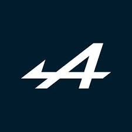

BWT Alpine F1 Team
Alpine je francouzský tým, který se snaží navázat na slavnou historii Renaultu ve F1. Růžovo-modré zbarvení je nezaměnitelné.
Strategie
Alpine má někdy překvapivě dobré strategie, ale občas také udělají chyby. Jejich vývoj je postupný ale stálý.
Jezdci
| Pierre Gasly |
Franco Colapinto |
Monopost

Alpine A524 má charakteristické růžovo-modré zbarvení a solidní výkonnost v midfieldu
Technické parametry:
| Displacement |
RPM |
Weight |
Estimated |
Estimated |
| 1,6L |
15,000 |
800kg |
640hp |
220ftp torque |